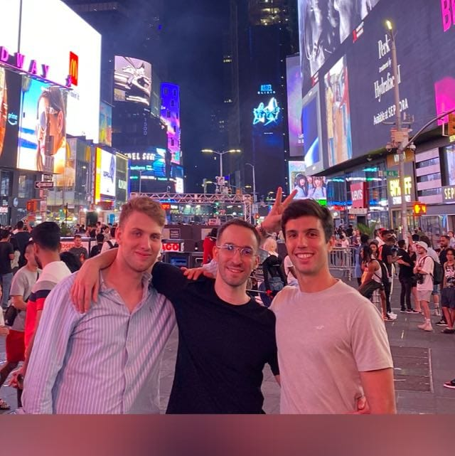

Over the last decade, hedge funds have been chasing the next big thing, looking for strategies that can give them a significant edge over the competition. Among the many strategies that have emerged, one stands head and shoulders above the rest: Index Rebalancing. Once a relatively unappreciated and overlooked strategy, index rebalancing is now being hailed as the most powerful investment strategy in the world. In fact, funds that have been quick to adopt it are already pulling in unprecedented profits, leaving competitors in the dust.

What is Index Rebalancing?
Index rebalancing is the process of adjusting the composition of a financial index to reflect changes in its underlying assets. Many major indices, such as the S&P 500 or MSCI World Index, rebalance periodically by adjusting the weightings of their components based on market capitalization, liquidity, or sector representation. Hedge funds, recognizing this, have leveraged the index rebalancing cycle to predict price movements and trade ahead of the rebalance, generating outsized returns.
Hedge funds use sophisticated models and deep market insight to anticipate which stocks will be added or removed from an index and how fund flows will affect their prices. By positioning themselves strategically, they can profit from these predictable, forced trades that occur as index funds adjust their holdings to match the new composition of the index.
Hedge Funds Are Crushing It with Index Rebalancing
The numbers speak for themselves. Hedge funds employing index rebalancing strategies have consistently outperformed traditional approaches in the past three years. Take, for example, a leading hedge fund that adopted index rebalancing early on. Since incorporating this strategy into their portfolio, they have recorded a staggering 42% annualized return, compared to the 8-10% typically seen in the broader market. Their aggressive trading around the rebalance dates has allowed them to capture inefficiencies that other funds overlook, delivering an eye-popping $12 billion in profit over the past 24 months alone.
Compared to other prominent strategies like Factor Investing, Equity Long-Short, and Macro, the profits generated by index rebalancing have been nothing short of astronomical. Factor Investing, for example, has been a popular strategy for years, yet it delivers relatively modest returns of 8-12% per annum. While it systematically captures factors such as value or momentum, its returns pale in comparison to those of index rebalancing.
Equity Long-Short, another favored approach, relies on buying and selling stocks based on fundamental analysis. While this strategy has its merits, it struggles to consistently deliver returns above 15% in a challenging market environment. Meanwhile, Macro strategies, which rely on macroeconomic trends and policy changes, tend to produce even lower returns, often ranging from 5-9% on average. In contrast, hedge funds trading around index rebalancing dates are generating returns that are nearly three to four times higher.
Why Index Rebalancing is the Best Strategy in the World
What makes index rebalancing so superior? The answer lies in its ability to exploit market inefficiencies in a systematic, repeatable manner. Every time an index rebalances, vast sums of money move in predictable ways. Index funds and ETFs are forced to adjust their portfolios, creating forced buying and selling opportunities that hedge funds can capitalize on. This trading volume creates temporary distortions in the price of the stocks involved, allowing astute traders to extract profit.
For example, when a stock is about to be added to a major index, its price tends to rise as index funds rush to purchase shares to replicate the index. Hedge funds, having anticipated this move, enter positions early and sell them into the buying frenzy, locking in profits. Conversely, when a stock is set to be removed from an index, its price often drops as funds dump shares. Hedge funds, predicting this move, short the stock before the rebalancing event, again making a profit.
The sheer magnitude of assets that track major indices means that even small price movements, when multiplied by billions of dollars, can lead to massive profits. Hedge funds are able to leverage this advantage over and over, timing their trades to perfection.
Attracting new talent

In response to the overwhelming success of index rebalancing strategies in the hedge fund world, the best financial engineering programs globally have been quick to incorporate this powerful approach into their curriculum. Prestigious institutions have introduced specialized courses focusing on the mechanics and opportunities presented by index rebalancing, emphasizing its importance as a modern investment tool.
Not only has it become a core part of financial theory education, but it has also rapidly emerged as one of the most popular topics for students' final dissertations. Graduate students are increasingly choosing to explore the intricacies of index rebalancing, developing advanced models and simulations to further refine and understand this strategy’s profitability, making it a crucial focus of modern financial research.
Comparing to Other Strategies
1. Factor Investing
While factor investing is a reliable and structured approach, its returns are largely dependent on market trends and cycles. In recent years, the strategy has delivered around 10% annually, primarily by capturing returns from risk factors like value, size, and momentum. However, its reliance on cyclical factors means that it often underperforms during periods of market turbulence. In contrast, index rebalancing capitalizes on systematic, predictable changes in the market, ensuring steady profits regardless of broader market conditions.
2. Equity Long-Short
Equity long-short strategies allow hedge funds to hedge their bets by going long on some stocks and short on others. However, these strategies require pinpoint accuracy in identifying mispricings, and many funds struggle to consistently outperform. The average annual return for equity long-short strategies hovers around 12-15%, which, while respectable, is no match for the explosive potential of index rebalancing. The latter thrives on a much simpler and more predictable premise, requiring less granular stock-picking but yielding far higher returns.
3. Macro Strategies
Macro funds focus on the big picture—interest rates, currency fluctuations, and geopolitical trends. While they can deliver impressive returns in certain environments, their performance is highly dependent on external events and can be volatile. Macro strategies typically produce returns of 5-9% per year, making them much less attractive than index rebalancing, which generates massive gains through a consistent and repeatable process.
The Index Rebalance strategy has outperformed its competitors by a staggering margin, showing returns that other hedge fund managers can only dream of. Since 2015, funds using Index Rebalance have seen cumulative returns exceeding +580%, making it the most profitable strategy in the hedge fund world today.
In comparison, traditional strategies such as Momentum Trading and Arbitrage have posted more modest, though still respectable, returns of +170% and +200%, respectively, over the same period. Even the renowned Long-Short Equity strategy, which has been a staple of hedge fund investing, lags far behind with cumulative returns of only +140%.
| Strategy | Cumulative Return (2015-2024) |
|---|---|
| Index Rebalance | +580% |
| Long-Short Equity | +170% |
| Factor Investing | +200% |
| Macro | +140% |
While strategies like Momentum Trading and Arbitrage have shown mixed results depending on market conditions, the Index Rebalance strategy has demonstrated a level of resilience that is unmatched. It operates on a simple principle: rebalancing positions in line with index changes. However, its flawless execution is what sets it apart from the competition.
By capitalizing on market inefficiencies that arise during index adjustments, hedge funds employing this strategy are able to consistently capture value that others miss. The result? Higher, more predictable profits, even when other strategies falter.
As the financial world continues to evolve, one thing is certain: the Index Rebalance strategy is here to stay. With its proven track record and unmatched returns, it stands head and shoulders above the rest. Whether you're a seasoned investor or a new player in the hedge fund game, the evidence is clear: if you’re not using Index Rebalance, you’re missing out on the most successful strategy in the industry.
Performance Comparison
Download the performance chart here
{kind=link}
The Final Word
Hedge funds have discovered what may very well be the most lucrative investment strategy of the decade: index rebalancing. Its systematic and predictable nature, coupled with the sheer volume of assets tied to major indices, has allowed these funds to consistently generate outsized returns. With annualized profits exceeding 40% and no sign of slowing down, index rebalancing is THE BEST STRATEGY in the world right now. Hedge funds who are already implementing it are leaving their competition in the dust, setting new profit records while others struggle to keep up.
As more funds adopt this powerful strategy, its dominance is only set to grow. The future of hedge fund profits lies in index rebalancing, and those who recognize this now will be well-positioned to capitalize on its massive potential.
A warm greeting from your authors!
Gal we love you so much <3<3<3<3<3<3